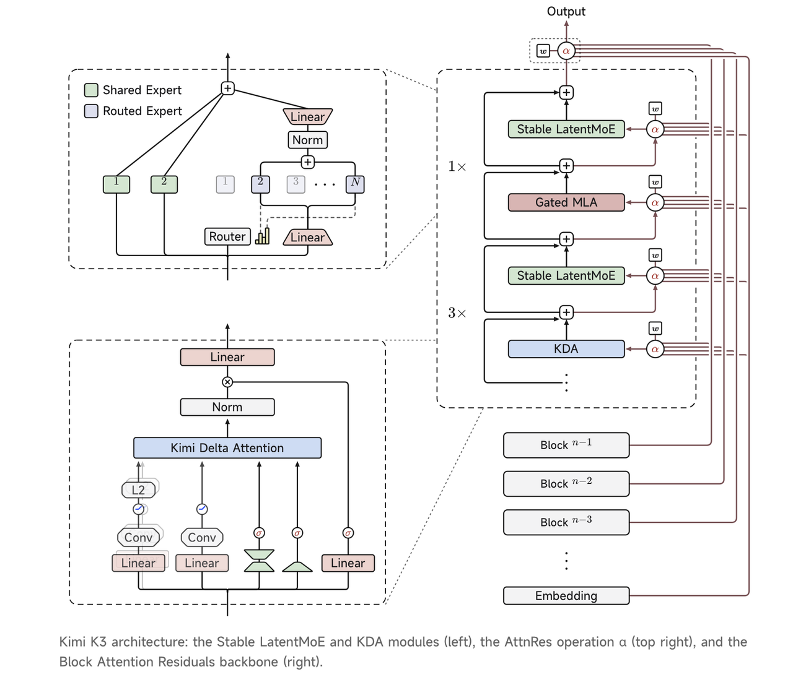
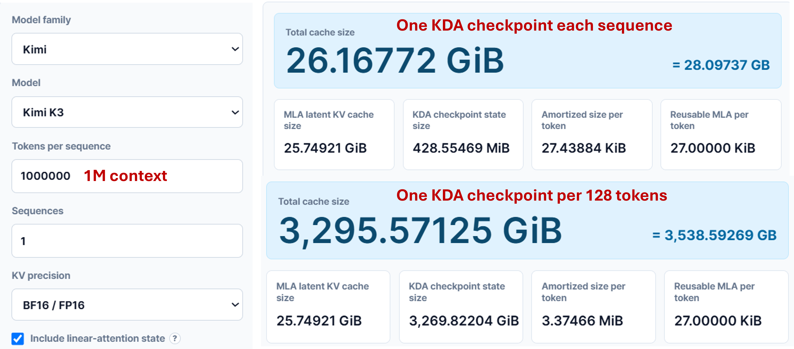
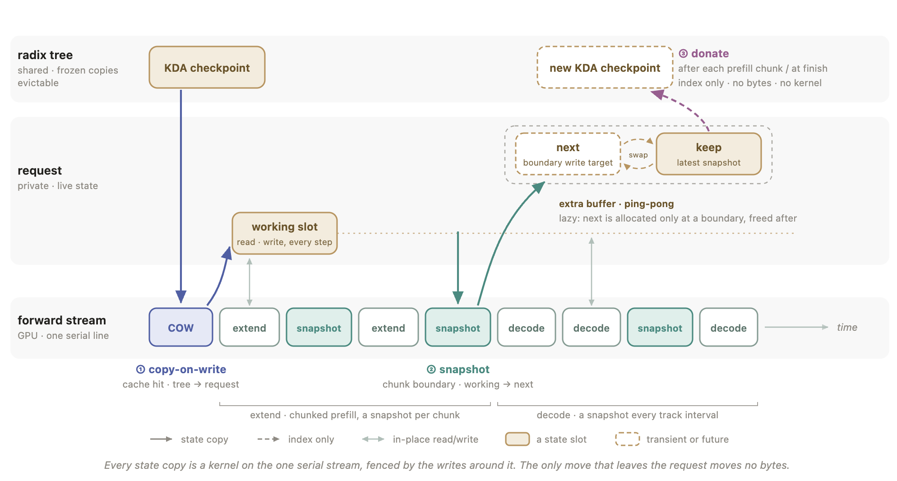
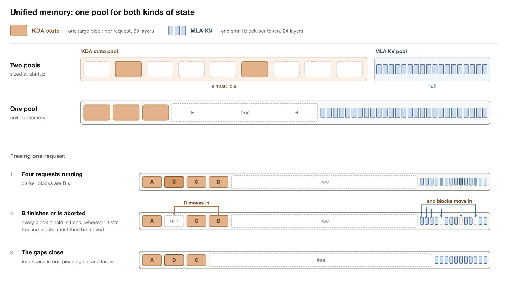
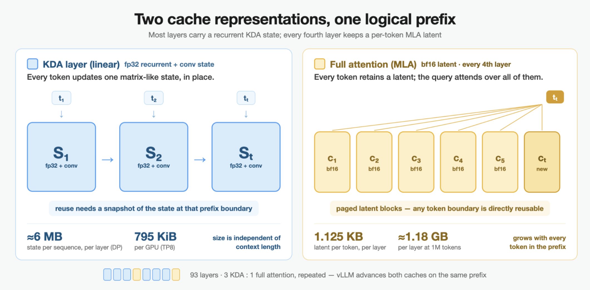
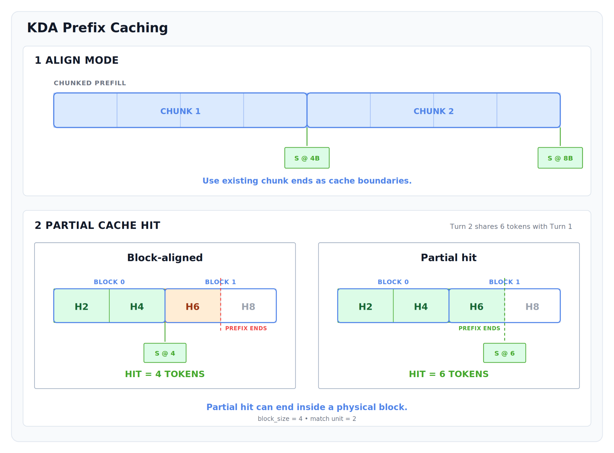
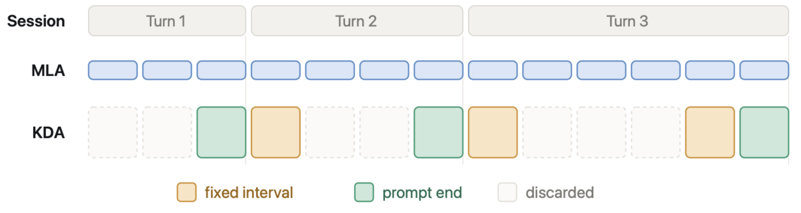
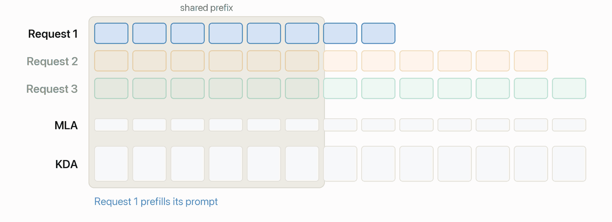
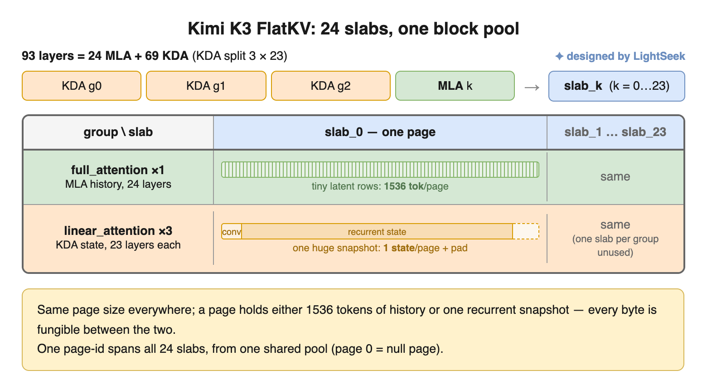
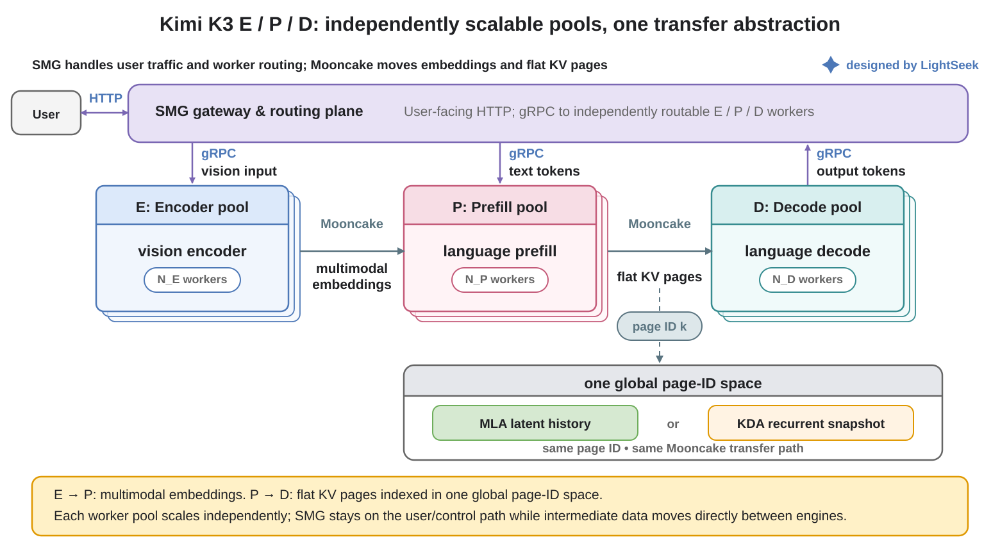

7月27日，Moonshot AI正式开源其下一代旗舰模型Kimi K3。K3总参数量达2.8万亿，采用高度稀疏的混合专家（MoE）架构，每个token仅激活896个专家中的16个。目前，它是全球参数规模最大的开源权重模型之一。
除了庞大的参数规模，K3还对其模型架构进行了全面升级。它采用了全新的线性注意力机制Kimi Delta Attention（KDA），与MLA（Multi-head Latent Attention，多头潜在注意力）协同工作，构成混合注意力架构。这一设计原生支持100万token的上下文窗口，同时兼顾长上下文推理效率与模型性能。此外，K3原生支持视觉理解，并在多个基准测试中取得开源模型领先水平，涵盖代码、Agent（智能体）任务和复杂推理。
然而，K3的影响远不止于让模型“更大”。与传统Transformer相比，K3引入的基于KDA的混合注意力机制从根本上改变了缓存的性质。系统不仅要管理传统的KV Cache，还要管理诸如循环状态（Recurrent States）等新的模型状态。因此，传统的Prefix Cache复用和解耦推理架构设计也必须随之演进。
本文将介绍SGLang、vLLM和TokenSpeed如何适应Kimi K3的新缓存语义，以及Mooncake如何与这些框架协作，为K3提供完整的分布式推理能力。
对于推理系统而言，Kimi K3带来的变化远不止简单地增加模型参数规模。更重要的是，K3引入了一种全新的混合注意力架构，将KDA（Kimi Delta Attention）与MLA（Multi-head Latent Attention）相结合。
在开源的K3配置中，模型共包含93个解码器层，其中69层采用KDA，24层采用MLA。这些层通常按照连续三个KDA层后接一个MLA层的模式组织。因此，与传统模型中所有层依赖统一注意力机制不同，K3同时采用两种根本不同的方式来表征和维护模型内部的历史信息。

MLA遵循潜在注意力设计：每个token都会生成自己的潜在KV，因此缓存仍会随上下文长度增长，这与传统Transformer的KV Cache一致。
根本性变化来自KDA。它不再存储每一个历史的Key和Value，而是将历史循环压缩为固定大小的状态。逐通道衰减因子和Delta Correction控制新信息如何更新该状态，而固定长度的Convolution Window则保留最近的局部上下文。
因此，对于每个KDA层，需要持续维护的历史信息不再是长序列的KV对，而是两类状态：
Recurrent state：循环更新的历史状态；
Convolution window：包含最近token的局部窗口。
随着新token的到来，两种状态都会就地更新，而不是像传统KV Cache那样持续增长。该设计的关键优势在于，推理期间所需的缓存量不再随上下文长度线性扩展。即使面对百万token的上下文，KDA层维护的循环状态仍保持固定大小，从而显著降低长上下文推理的内存压力。
在传统Transformer中，每个token都有自己独立的Key和Value。推理框架可以使用Radix Tree等结构来识别跨请求的最长公共前缀，复用相应的KV Cache，并跳过冗余的Prefill计算。在这种设置下，Prefix Cache复用几乎等同于KV Cache复用：一旦token前缀匹配，就可以直接恢复与该前缀关联的缓存。
KDA打破了这种等价性。在Kimi K3中，MLA层仍然维护token级别的latent KV，而KDA层维护通过顺序处理整个前缀产生的Recurrent State。因此，两种根本不同的缓存形式在同一模型中共存。
更重要的是，KDA状态不能像KV Cache那样被任意截断。假设一个请求已处理了10,000个token，系统仅在10,000-token位置存储了KDA状态。如果另一个请求只共享前8,000个token，则无法在8,000-token边界处从该状态恢复。已存储的状态已经包含了后续2,000个token的信息，无法逆转递归过程来重建更早的状态。
因此，token级前缀匹配并不必然意味着相应的KDA缓存可以恢复。为了保证恢复后的执行与不间断执行等价，MLA KV和完整的KDA状态都必须可用，并且对齐到相同的前缀边界。这意味着KDA-aware Prefix Cache必须在选定的前缀边界处显式存储检查点。即使MLA KV匹配到了更长前缀，如果对应的KDA检查点不可用，系统也必须回退到最近的合法边界，并重新计算该边界之后的所有内容。
DeepSeek V4的SWA（Sliding Window Attention）也存在类似问题，但其解决方案相对直接：系统可以按固定间隔存储检查点，例如每128个token存储一次。然而，对于KDA而言，这种策略代价过高，因为每个检查点要大得多。根据KV Cache Size Calculator，单个KDA检查点会引入约0.4 GiB的固定缓存开销。若检查点间隔为128个token，一个100万token上下文的请求仅KDA状态就需要大约3 TB的存储空间。即使采用10,000个token这样更粗略的间隔，同一请求仍需要大约40 GB的额外缓存。

然而，增大检查点间隔会引入另一个问题。Prefix Cache复用只能延伸到最近的可恢复KDA检查点。检查点越稀疏，实际可复用的前缀就越短。
假设每10,000个token存储一次检查点：
如果两个20,000 token的请求共享前15,000个token，系统只能复用直至10,000 token检查点的前缀。系统必须重新计算10,000个token，而不是只计算剩余的5,000个token，这实际上使计算量翻倍。
如果两个910,000 token的请求共享前905,000个token，缓存复用率看起来仍然很高。然而，由于最近的检查点位于900,000 token处，系统必须再次重新计算10,000个token，而不是原来的5,000个token，导致相同的两倍计算量增加。
这些并非罕见边缘情况。事实上，它们与Agentic（智能体原生）工作负载的典型特征高度吻合：交互轮次多、每轮新增token数量少，且连续轮次之间通常有超过95% 的上下文是共享的。在此类场景中，有效的Prefix Cache命中率哪怕仅下降几个百分点，也会导致需要重新计算的token数量大幅增加。
因此，KDA缓存管理面临一个根本性权衡。更密集的检查点能提供更细粒度的恢复，并提高有效Prefix Cache命中率，但同时也会导致缓存消耗快速增长。更稀疏的检查点能降低存储开销，但每次缓存命中后系统需要重新计算更长的后缀，从而削弱缓存的性能收益。
KDA引入的变更不仅影响单实例内的Prefix Cache复用，还影响分离式推理架构中的缓存管理。在传统Transformer中，跨实例缓存复用和Prefill–Decode分离都围绕KV Blocks的统一抽象构建。只要token前缀匹配，相应的KV Cache就可以直接复用或迁移。然而，对于Kimi K3，缓存现在由两种不同类型的状态组成：MLA KV和KDA State。MLA KV仍然可以按token或block粒度进行管理，而KDA State只能从与特定前缀边界关联的检查点恢复。因此，跨实例复用不再仅仅是寻找最长匹配token前缀的问题。系统必须确保MLA KV和KDA State在同一个恢复点同时可用且一致，而不能自由组合来自不同来源的缓存数据。
同样的问题也影响Prefill–Decode分离。Prefill和Decode阶段之间需要传输的不再仅仅是KV Blocks的集合，而是一组异构模型状态，包括MLA latent history和KDA Recurrent States。为每种状态类型设计独立的传输协议，不仅会增加系统复杂性，还会将模型特定的架构细节暴露给调度和通信层。因此，Prefill–Decode分离必须从KV Cache传输演变为更通用的模型状态传输抽象。
在多模态工作负载中，分离式流水线进一步扩展为Encoder–Prefill–Decode（EPD）。系统不仅需要传输Prefill阶段产生的MLA和KDA状态，还需要传输Encoder生成的视觉嵌入（visual embeddings）。因此，构建一个能够跨不同执行阶段高效移动不同类型模型状态的统一数据平面，成为分离式Kimi K3推理面临的新挑战。
为适应KDA对Prefix Cache语义带来的变化，SGLang在其现有Radix Tree上扩展了KDA感知（KDA-aware）的检查点机制。Radix Tree仍然跨请求匹配token前缀，但可恢复位置不再仅由最长匹配token前缀决定。相反，MLA KV和KDA State必须同时可用且在同一前缀边界保持一致。
因此，SGLang在Radix Tree中维护稀疏的KDA检查点。当请求匹配到现有token前缀时，系统会在匹配路径上搜索最近的有效检查点，同时恢复相应的MLA KV和KDA State，并重新计算该检查点未覆盖的部分。

首先，在检查点选择方面，SGLang并不依赖简单的固定间隔策略，而是根据请求执行阶段来选择更有价值的检查点位置：
Prefill阶段：Prefill通常按块执行，因此SGLang优先在块边界存储检查点。这样将检查点的创建与现有调度流程对齐，避免为保留中间状态而引入额外的同步开销。
Decode阶段：由于每个生成的token都可能成为未来请求共享前缀的一部分，SGLang在Decode期间按固定间隔创建检查点，在恢复粒度与缓存开销之间取得平衡。
Radix Tree分支点：当多个请求共享某个前缀或在某一位置分叉时，该位置更可能成为未来请求的缓存命中点。因此SGLang优先保留这些高复用价值位置的检查点。
其次，在检查点预算管理方面，SGLang必须限制KDA States占用的GPU memory量。即使每个单独的缓存命中能带来显著收益，沿每条Radix Tree路径存储过多检查点也会迅速耗尽缓存容量。因此SGLang限制每条路径上保留的检查点数量，并将此约束与LRU（Least Recently Used）策略结合，以淘汰价值较低的状态：
具体而言，很少被访问的检查点优先回收、频繁访问路径上的检查点优先保留、新检查点仅在缓存压力允许时才替换现有状态（LRU策略）。
在稀疏检查点管理的基础上，SGLang进一步降低KDA States的存储开销。并非每个缓存的检查点都立即需要用于计算，如果长期以高精度格式保留所有状态，将消耗大量GPU内存。因此，SGLang将当前运行请求使用的活动状态与存储在Radix Tree中的缓存状态分离开来。活动状态保留在运行时状态池中，而非活动检查点则被移至独立的缓存池，并以压缩格式存储。
SGLang当前还提供一条可选的本地检查点压缩路径。它将非活动Recurrent States压缩为INT8，以牺牲部分恢复精度换取更大的本地缓存容量。对于占存储空间绝大部分的KDA temporal state，SGLang按通道计算量化参数并将状态压缩为INT8。体积小得多的local window state则保持原始精度。与以BF16存储完整KDA State相比，这种方法大幅降低了每个检查点的存储成本，从而在相同缓存预算下保留更多可复用的前缀状态。
KDA States在Decode期间持续更新，而Prefix Cache中的共享状态必须保持不变。与写入后不再变化的MLA KV Cache不同，KDA State无法在多个请求之间直接共享，因为一个请求的更新可能会影响其他请求的执行。为了安全复用KDA States，SGLang通过三种机制将每请求的执行状态与共享检查点分离开来：Copy-on-Write（写时复制）、Snapshot（快照）和Donate（捐赠）。
Copy-on-Write：从共享检查点安全恢复。当请求命中Radix Tree中的KDA检查点时，SGLang不会直接在共享状态上继续执行。相反，它首先将与检查点关联的KDA State复制到请求拥有的私有执行槽中。后续计算仅更新该私有状态，保持附加在Radix Tree上的共享检查点不变。这使得多个请求能够安全地复用同一个Prefix Cache节点，同时独立推进各自的状态。
Snapshot：将运行时状态转换为可复用状态。默认情况下，请求执行期间产生的KDA State仅归属于当前请求。当请求到达新的可缓存前缀边界时，SGLang将当前运行时状态保存为新的Snapshot，并将其附加到Radix Tree以供后续请求恢复。为防止Snapshot操作与Forward期间的状态更新发生竞争，SGLang将状态复制调度到Forward Stream上，并依赖CUDA Stream排序来保证安全读写。Snapshot还会交替写入额外的缓冲区，避免新Snapshot覆盖仍被Radix Tree引用的旧状态。
Donate：降低检查点创建开销。如果每次创建Snapshot都将整个KDA State复制到缓存树中，会产生大量数据移动开销。因此SGLang引入了Donate机制。一旦Snapshot完成，系统直接将对应状态槽的所有权转移给Radix Tree，仅更新状态索引，而不再复制底层数据。借助Donate，检查点创建从大规模状态复制变为轻量级元数据转移，显著降低了将KDA State集成到Prefix Cache复用中的管理开销。
由于MLA KV和KDA State在分配粒度和生命周期上存在差异，SGLang最初通过两个独立的内存池管理它们。MLA KV Blocks和KDA State Blocks从独立预留的GPU内存池中分配。这种设计使两类缓存逻辑隔离，但要求系统根据预期工作负载预先估算它们的容量比例。
然而，在实际推理工作负载中，缓存需求往往难以预测。当短请求占主导时，KDA State Pool可能首先耗尽。在长上下文工作负载中，MLA KV Pool反而可能成为瓶颈，即使另一个池中仍有未使用的GPU内存。这种不平衡降低了整体GPU内存利用率。
为解决此问题，SGLang提供可选的Unified Memory模式，在共享物理容量池中管理MLA KV Blocks和KDA State Blocks。两类缓存保留各自的逻辑结构和分配粒度，但从相同的底层GPU内存容量中分配，使内存使用能够根据实际工作负载动态调整。

在实现中，Unified Memory预留一块连续的GPU内存区域。KDA State Blocks和MLA KV Blocks从相向的两端向内增长，二者之间的空间作为共享空闲容量池。当对象被释放时，系统用对应端的对象填补产生的空洞，保持可用区域连续，并减少长时间运行工作负载中的内存碎片。
需要注意的是，“unified”指的是物理容量的统一管理。它并不意味着将MLA KV和KDA State强制放入相同大小的页中。每种缓存类型仍使用最适合自身特性的布局进行分配和管理；它们只是在GPU内存层面共享未使用的容量。
此模式可通过 `--enable-unified-memory` 显式启用，使SGLang能够更灵活地适应不同请求分布下Kimi K3混合注意力架构的缓存需求。
上述优化解决了单个SGLang实例内的KDA感知前缀缓存管理问题。然而，在大规模推理部署中，单个实例的GPU缓存容量仍然有限，许多具有高复用价值的长上下文前缀无法被无限期保留。
为了进一步扩大缓存复用范围，SGLang将Mooncake集成到其KDA感知缓存系统中。通过HiCache，缓存对象可以超越单机GPU内存，扩展到更大的共享缓存层。当新请求到达时，系统不仅可以查询本地Radix Tree Cache，还可以从Mooncake检索其他推理实例产生的缓存状态，在当前实例上恢复并继续执行。
Mooncake不参与KDA State的生成、更新或恢复语义。因此，它无需理解模型内部注意力机制之间的差异。它的职责是高效管理和传输SGLang已确定为有效且可复用的缓存对象。这种职责分离使得SGLang和Mooncake可以独立处理正确性与分布式扩展性：SGLang决定哪些状态可以复用，而Mooncake决定这些状态如何在实例之间移动。
与SGLang基于Radix Tree的状态管理方法不同，vLLM从统一缓存管理框架出发。它将MLA KV和KDA State都纳入Hybrid KV Cache Manager，然后结合灵活的缓存保留策略与Mooncake的分布式缓存能力，实现跨实例复用。 具体地，vLLM通过Hybrid KV Cache Manager扩展其现有KV Cache管理框架，让单个Scheduler协调不同生命周期的两类缓存对象。

为防止KDA State管理限制Prefix Cache复用的匹配粒度，vLLM将逻辑前缀匹配与状态存储的物理位置解耦。请求匹配基于细粒度的链式前缀哈希，可以在物理状态块内部识别匹配，而不是将物理KV block作为最小匹配单元。这使得系统能够在更细的粒度上定位共享前缀。
与此同时，KDA State Blocks无需覆盖每个token位置。它们只存储在选定的前缀边界上。当请求从共享前缀恢复执行时，vLLM首先将相应的KDA State复制到请求私有存储中，再继续计算。这可以防止就地更新破坏被其他请求共享的缓存状态。
在vLLM中，KDA State不像MLA KV那样为每个token分配独立的缓存条目。相反，它使用更大的State Blocks作为管理的基本单元。每个State Block存储处理一段连续token后产生的循环状态和卷积状态。这种设计降低了状态分配和管理开销，但引入了一个新问题：请求之间实际共享前缀的长度很少与State Block边界精确对齐。
如果Prefix Cache匹配仅限于KDA State Block边界，那么位于更细粒度前缀位置的有效KDA state检查点将无法被直接复用。例如，假设一个KDA State Block覆盖4,096个token，而两个请求共享一个4,480 token的前缀。传统的块对齐缓存只能识别前4,096个token，从而迫使后续请求复用一个比实际可用更短的前缀。

为了解决这个问题，vLLM引入了Fine-Grained Partial Hits，将前缀匹配的粒度与KDA State的物理存储粒度解耦。系统继续使用大型KDA State Blocks管理底层状态，同时允许在每个State Block内记录更细粒度的Prefix Entries。
一旦针对某个token边界生成了有效的KDA State Block，该位置就可以作为合法的恢复点，即使它落在尚未完全填充的State Block内部。在上面的例子中，vLLM可以直接在4,480-token位置记录一个Prefix Entry，使后续请求能够从更长的共享前缀恢复，而无需额外创建KDA State的完整副本。
策略1：Interval-Based Retention ：在结构化边界存储检查点。

在具有清晰上下文结构的工作负载中（例如多轮对话和agentic（智能体原生）任务），某些前缀边界天然具有更高的复用概率。因此vLLM支持按固定间隔存储KDA检查点，同时保留每个Prompt结束时的状态。
例如，系统可以每隔固定数量的token创建一个检查点，并自动在每个Prompt边界保留KDA State。相比机械地按均匀间隔分布检查点，Prompt末尾的State通常对真实工作负载更有价值。在多轮对话中，下一个请求通常会复用上一轮的整个Prompt，因此从该Prompt末尾恢复可以消除大量冗余计算。
用户可以通过VLLM_PREFIX_CACHE_RETENTION_INTERVAL配置该间隔。当此值设置为0时，vLLM会禁用周期性检查点创建，仅保留Prompt末尾的State，从而降低以多轮对话为主的工作负载的缓存开销。
策略2：Marconi风格的选择性保留：仅缓存真正热的前缀。

固定间隔策略可以捕获可预测的复用模式，但无法预先判断动态出现的共享前缀：例如系统Prompt、代码仓库快照或工具定义：是否会被复用。如果在该前缀首次出现时立即保存KDA State，可能会让一次性前缀消耗大量缓存容量。
因此vLLM引入了Marconi风格的选择性保留，基于一个简单的原则：第二次命中时才缓存。
当某个前缀首次出现时，系统会记录其访问元数据，但不会立即存储对应的KDA State。只有当后续请求再次命中同一前缀：表明其具有实际复用价值：vLLM才会在该位置创建KDA检查点。这可以防止一次性的长Prompt浪费缓存预算，同时自动将频繁访问的热前缀提升为可复用状态。
这两种策略共同覆盖了可预测的复用边界以及运行时发现的热前缀模式。
上述优化解决了单个vLLM实例内的统一MLA KV与KDA State管理、细粒度前缀匹配和状态恢复问题。针对大规模分布式推理，vLLM进一步通过KV Connector集成Mooncake，将Hybrid Cache从单实例存储扩展到跨实例共享。
对于Kimi K3这类混合注意力模型，Mooncake不再存储单一的KV Block，而是存储与同一前缀关联的一组Hybrid Cache对象。MLA KV继续以Paged KV Blocks形式表示，KDA State则以Snapshot形式存储在前缀对应的位置。为避免不同缓存类型之间的冲突，vLLM使用Cache Group、Prefix Hash和并行配置等信息来区分写入Mooncake的对象，确保MLA KV、KDA State以及不同rank的数据保持正确对齐。
为了将细粒度部分命中机制扩展到远程缓存，vLLM同时将每个细粒度前缀条目对应的KDA State存储到Mooncake中。写入过程中，系统不仅保留完整块，还保留经过Scheduler Alignment验证的Partial States，使远程实例能够命中相同的细粒度前缀边界。MLA KV与KDA State使用一致的前缀标识符进行管理，确保远程恢复时两种缓存类型始终对应相同的逻辑前缀。
当请求到达新的推理实例时，vLLM同时查询本地缓存和Mooncake远程缓存，确定各来源可用的MLA KV与KDA State范围，再协调本地与远程结果以选定最终的Hybrid Cache Boundary。如果Mooncake提供更长的完整MLA与KDA状态对，系统加载远程缓存并取代较短的本地命中；如果远程缓存无法提供更长的一致状态，vLLM继续使用本地缓存，避免不必要的数据传输。
通过KV Connector集成Mooncake，vLLM将Hybrid Cache的生命周期从单个实例的GPU内存扩展到分布式缓存层。vLLM负责维护MLA KV与KDA State之间的语义一致性，Mooncake则提供高效的跨实例存储与数据传输。二者结合使Kimi K3的长上下文状态不仅能在单机内复用，还能在大规模推理集群中复用，显著降低多轮对话、coding agents及其他高复用负载中的冗余计算。
传统的Prefill–Decode（PD）分离主要解决推理节点之间的KV Cache传输问题。Prefill节点处理完输入上下文后，将得到的KV Blocks发送给Decode节点，由后者继续生成。然而，对于Kimi K3等下一代模型，传输的数据不再是同质的KV Cache块集合。
Kimi K3采用结合MLA与KDA的混合注意力架构，其状态生命周期、更新粒度和物理布局均与传统KV Cache不同。继续沿用传统KV Cache抽象来管理和传输各状态类型，不仅会增加系统复杂度，还会让模型特有的架构细节渗入调度、缓存和网络传输层。
因此，面向下一代分离式推理系统的挑战不再仅仅是传输KV Cache，而是如何高效传输异构的模型中间状态。TokenSpeed通过Flat KV解决这一问题，将MLA KV与KDA State表示为统一、可传输的数据单元。结合Mooncake的高性能传输能力，该数据面超越了传统PD分离，支持多模态Encoder–Prefill–Decode（EPD）分离。
为应对MLA KV与KDA State的异构物理管理需求，TokenSpeed引入了Flat KV，将两类状态统一纳入页粒度（page-granularity）管理模型。其核心思想是：不同模型状态无需共享相同的内部数据布局，但应可映射到统一的缓存管理单元。
在Flat KV中，单个页可存储1,536个token的MLA潜在历史，或一份完整的KDA循环快照。换言之，随token增长的MLA KV与固定大小的KDA State都被抽象为相同大小的页对象，并通过统一的页分配器进行管理。

TokenSpeed将Kimi K3的69个KDA层分为三组，每组23层。这些组与全注意力组一起映射到24个物理slab上。不同类型的状态共享同一页地址空间：给定的全局页ID始终映射到固定的物理位置，使MLA KV与KDA快照能够使用相同的分配、回收与所有权管理机制。
该设计的核心价值在于，将KDA State从专用模型状态转化为可由现有KV Cache基础设施管理的页对象：
Prefix Cache可通过统一接口管理MLA KV页与KDA State页。
写时复制（Copy-on-Write）等状态操作可复用相同的页生命周期管理。
在PD分离架构中，系统只需传输页，无需为不同类型的状态设计单独的传输协议。
在Flat KV基于页的表示基础上，TokenSpeed将PD分离中的传输单元从传统的KV Blocks扩展为统一的页。MLA KV和KDA State都可以表示为相同的数据移动单元，并通过共享的页ID空间和元数据格式进行管理。
Mooncake随后在页级别处理跨节点数据传输。Prefill节点只需提供需要传输的页ID及其关联的元数据。Mooncake Transfer Engine可以直接定位并传输GPU缓冲区中相应的物理区域，而无需了解页面中包含的是MLA KV还是KDA State。
收到页后，Decode节点使用相同的全局页ID空间重建相应的缓存视图。由于MLA KV页和KDA State页共享统一的页管理模型，Decode端不需要针对不同状态类型分别设置接收和恢复路径。Flat KV映射层将每个物理页解释为相应的逻辑缓存对象。
因此，Flat KV和Mooncake建立了明确的职责分离：TokenSpeed将异构模型状态转换为统一的页表示，而Mooncake负责在Prefill和Decode节点之间高效传输这些页。模型架构的变化仅影响Flat KV映射逻辑，底层传输路径保持不变。
由于Kimi K3原生支持视觉输入，其推理流水线不再局限于Prefill和Decode阶段，而是需要扩展为Encoder–Prefill–Decode (EPD) 三阶段架构。为支持这一设计，TokenSpeed将Encoder从原先嵌入Prefill的计算中分离出来，使其成为独立的服务阶段，并利用Mooncake构建跨越所有三个阶段的数据传输路径。

在TokenSpeed的EPD架构中，Encoder、Prefill和Decode各自拥有独立的工作线程池、调度策略和扩缩容能力。SMG（Serving Management Gateway）负责请求编排、阶段间路由和请求状态关联，使得三个阶段可以根据各自的工作负载特性独立部署和扩缩容。
Encoder专注于视觉输入处理，可根据图像数量和分辨率等因素独立扩展。Prefill将视觉嵌入与文本上下文结合并执行上下文计算，Decode则负责后续token生成。通过解耦这些阶段，涉及多图像或高分辨率输入的视觉密集型请求不再直接与语言模型的Prefill和Decode阶段竞争计算资源。
在数据传输层，Mooncake从传统PD解耦的KV Cache通道演进为覆盖整个EPD管线的统一数据平面。端到端路径包含两类大规模数据传输：
Encoder → Prefill：视觉嵌入传输。完成视觉编码后，Encoder使用Mooncake将生成的视觉嵌入直接从Encoder节点的GPU传输到Prefill节点的GPU。此过程既不需要CPU端序列化，也不需要中间共享文件系统，大幅降低了大规模视觉输入的数据移动开销。
Prefill → Decode：Flat KV页面传输。完成语言上下文计算后，Prefill阶段通过Mooncake将以Flat KV表示的MLA潜在历史状态和KDA循环状态发送到Decode节点。由于Flat KV已将不同的模型状态抽象为统一页面，Mooncake可以复用PD解耦中基于页面的传输机制。
Kimi K3博客：https://www.kimi.com/blog/kimi-k3
SGLang博客：https://www.lmsys.org/blog/2026-07-27-kimi-k3-day0-support
vLLM博客：https://vllm.ai/blog/2026-07-27-k3
TokenSpeed博客：https://lightseek.org/blog/tokenspeed-kimi-k3.html
Mooncake：https://github.com/kvcache-ai/Mooncake
OpenClaw + Mooncake：真实场景多会话推理的稳定性升级
借助Mooncake SSD卸载将KV Cache扩展到内存之外
LLM（大语言模型）服务需要多少KV Cache预算？
KT-FT v0.6.1：实现从MoE微调到本地服务的闭环
Mooncake加入PyTorch生态系统
参考：https://kvcache.ai/blog/kimi-k3-day0-support/